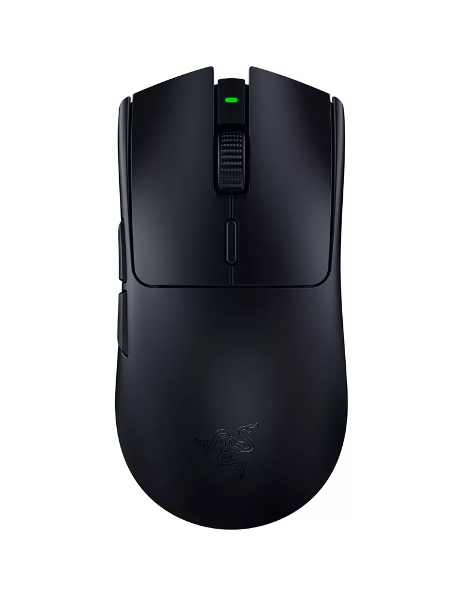
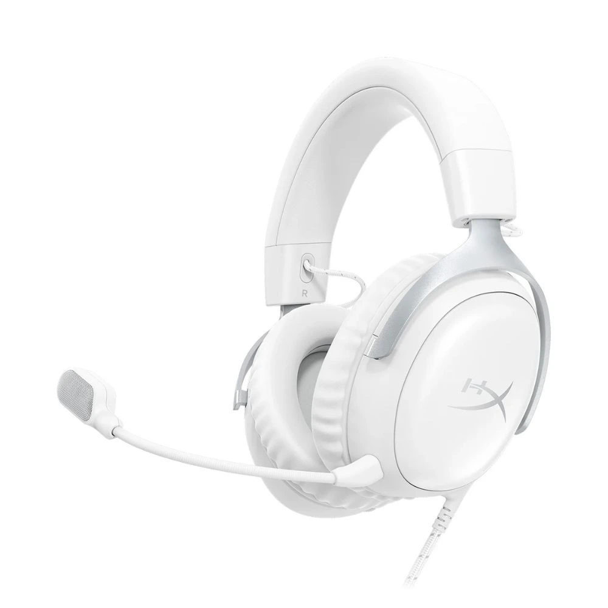

RACK ELEZ Mechanical Keyboard
₱2,250.00
A compact mechanical keyboard with tactile switches and RGB backlighting.

Providing quality hardware, custom PC setups, and reliable tech accessories for students and creators.
Student and Technology Enthusiast

₱2,250.00
A compact mechanical keyboard with tactile switches and RGB backlighting.
₱1,200.00
An ultra-lightweight wireless mouse featuring adjustable DPI settings and long battery life.

₱1,750.00
Studio headphones equipped with active noise cancellation and a clear microphone.
